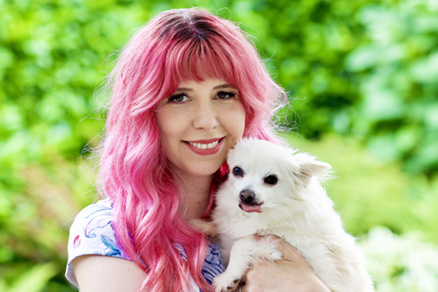

February 12, 2020 Double Loop Games Announces $2.5M Seed Investment Led by London Venture Partners Learn more
Who we are
We're a veteran, female-led mobile team from Kongregate, WB, Zynga, and Blizzard.
-
Emily Greer
Co-Founder, CEO
Loves tower defense, match-3s, knitting, data, and figure skating @EmilyG
-

Shelby Moledina
Co-Founder, COO, Game Director
Lifelong gamer, loves to draw, bake pies, play RPGs, and cuddle cute things @ShelbyMoledina
-
 Andy Bond
Technical Director
Andy Bond
Technical Director
Enjoys playing RPGs, building LEGO, and exploring science fiction @LegoCylon
-
 Graham Fratze
Art Director
Graham Fratze
Art Director
Professional doodler. Plays games with a controller in one hand and a glass of wine in the other
-
 Min Lieu
Senior Engineer
Min Lieu
Senior Engineer
Avid game player and game maker
News
Learn more about Double Loop and our philosophy from our blog and conference talks.

- Emily Talks to Robin Hunicke on the AIAS Game Maker's Notebook Podcast
- Emily's Conversation with Joakim Achren on the Elite Game Developers Podcast
- Game UX Summit 2017: "Breaking Through Labels"
- GDC 2013: "Building Games For The Long-Term"
- GDC 2015: "Don't Call Them Whales"
- GDC 2018: "Data-Driven or Data-Blinded? The Uses And Abuses of Analytics In Games" (behind pay wall)
Games
We believe that the best games are made with love, enthusiasm, and respect for the audience. And the best games, properly supported, are enduring hobbies that connect us to each other.
We are working on a mobile-first title with a planned 2021 launch date. Check back for more information and announcements in the coming months.
Jobs
To make games with longevity, you need teams that are sustainable. We're building an environment that's transparent, respectful, and family-friendly. Our founders are in San Francisco, but we'll hire anywhere with reasonable time zone overlap. Diverse candidates encouraged. Kindness expected.
Current Openings
While we only have a few open positions now we will be hiring engineers, artists, designers, writers, and data scientists later in the year. If you're interested please email jobs@doubleloopgames.com with your resume and we will contact you as we open an appropriate position.
Double Loop Games is looking for an experienced backend engineer to help build out the server infrastructure for a new, original mobile game.
Who do we want
Double Loop Games is looking for a collaborative & forward-thinking engineer to help us plan and build out the backend systems for our new game and studio. The ideal candidate has experience creating and maintaining a horizontally scalable cloud-based microservice architecture for a mobile game.
Responsibilities
- Architect a highly scalable server topology while minimizing hosting cost
- Assess and select the right cloud providers for each active region
- Choose the optimal database, message queue, protocol, and transport solutions
- Support and deploy multiple simultaneous versions to ensure a graceful upgrade path or facilitate A/B testing
- Identify, measure, and attain service reliability targets with observability sufficient to answer questions we haven’t yet discovered
- Collaborate with designers to build server-authoritative features, discover database storage requirements, and prepare for scalability where needed most
- Coordinate with client engineers to ensure that there are clear, reliable methods of communication between the client & server
- Ensure that governmental compliance requirements are satisfied for data retention & deletion (i.e. GDPR)
Qualifications
- Shipped games and worked on live-ops updates for a significant DAU game
- Has overseen development, scaling, and live-ops for a significant DAU live game
- Experience defining and implementing server initiatives
- Experience in working in large and varied code bases (SDKs/APIs/Libraries/Plugins)
- Excellent objected-oriented skills coding for performance and reliability at scale
- Efficient time-management and proven ability to estimate time needed for engineering task completion
- Strong communication skills and willingness to voice opinions
- Insist on the highest standards from one's self and team
- Love for making video games
Experience
- Fluency in C# and ASP.NET Core
- Fluency in Linux/Unix-based server operation
- Built on one or more cloud architectures (i.e. Alibaba, Amazon Web Services, Azure, Google Cloud Platform)
- Built on one or more scalable databases (i.e. Cassandra, DynamoDB, Redis, Spanner)
- Built on one or more message brokers (i.e. Kafka, RabbitMQ, Redis)
- Utilized infrastructure management technology (i.e. Agones, Consul, Docker Swarm, Kubernetes, Spinnaker, Zookeeper)
Education
- Bachelor's Degree (or equivalent experience) in Computer Science or related field
The following are a plus but not necessary
- Full-stack client development experience, particularly with Unity
- Experience with security on high DAU live games
- Experience with one or more game service platforms (deltaDNA, Firebase, PlayFab)
- Experience with one or more common message serialization frameworks (Cap’n Proto, Flatbuffers, MessagePack, Protocol Buffers, ZeroFormatter)
- Familiarity with the C# async/await model
What are we offering?
- Full-time role with benefits
- Interesting, highly original work in a small, supportive and well-funded start-up led by two female industry veterans
- Flexible working arrangements. Work from home wherever you may be as long as you have a reasonable number of overlapping hours with the pacific time zone (+/- 3 hours for engineering roles) and fast, reliable internet connection
Please send your full resume, references, and anything else you think we should see to jobs@doubleloopgames.com.